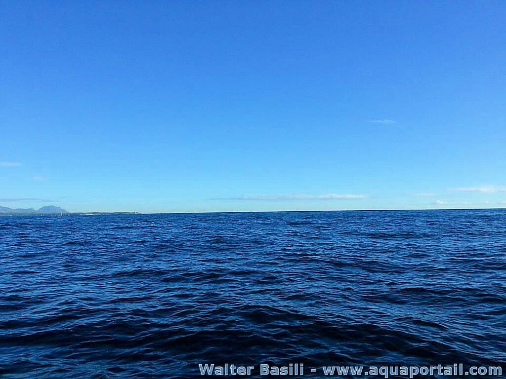

TD1 Géolocalisation
Exercice 2 :
Avec getCurrentPosition() :
Avec watchPosition() :
Exercice 3 :
Avec deviceMotion :
Avec deviceOrientation :
Par contre il ne récupère pas la translation du téléphone sur les différents axes.
Exercice 4 :
TD2 Géolocalisation
Exercice 1 & 2 & 3 :
TD3 Cartographie
Exercice 1 : version Canvas

Exercice 1 : version SVG
Exercice 2 :